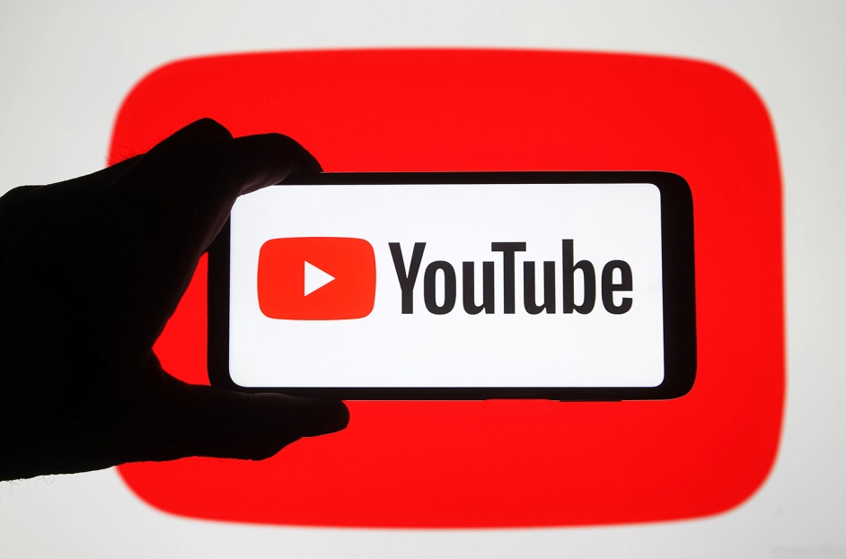

WEB 2.0
la Web 2.0 representa una evolución en la forma en que se utiliza y se interactúa con la Web, poniendo al usuario en el centro y permitiendo una participación activa y colaborativa en la creación y distribución de contenido en línea.
wikipedia 2001
Wikipedia, la enciclopedia libre, fue creada el 15 de enero de 2001, como proyecto de edición abierta
Wikipedia es una enciclopedia en línea que permite a cualquier persona crear, editar y colaborar en artículos de manera gratuita. Fue lanzada el 15 de enero de 2001 por Jimmy Wales y Larry Sanger. Su objetivo principal era crear una enciclopedia de contenido abierto y colaborativo que estuviera disponible para cualquier persona con acceso a internet.

WordPress
Se lanza WordPress, una plataforma que permitiría a los usuarios crear blogs y sitios web con facilidad.
WordPress es un sistema de gestión de contenido (CMS) que permite a los usuarios crear y administrar sitios web. Fue creado por Matt Mullenweg y Mike Little como un fork (una bifurcación o derivación) de otro proyecto llamado b2/cafelog. La primera versión de WordPress fue lanzada el 27 de mayo de 2003. Originalmente, WordPress se centraba en blogs, pero con el tiempo se expandió para admitir otros tipos de sitios web, como tiendas en línea, portafolios y sitios corporativos. Se convirtió en una de las plataformas de publicación en línea más populares, alimentando millones de sitios web en todo el mundo.

MySpace 2003
También al mismo año, MySpace se convierte en una de las primeras redes sociales masivas.
MySpace fue una red social que permitía a los usuarios crear perfiles personalizados, conectarse con amigos, compartir música y contenido multimedia. Fue fundada por Tom Anderson y Chris DeWolfe. MySpace fue lanzado públicamente en agosto de 2003. Durante su apogeo en la primera mitad de la década de 2000, MySpace fue una de las redes sociales más populares del mundo, especialmente entre los jóvenes y artistas musicales. Sin embargo, su popularidad disminuyó significativamente con el ascenso de Facebook y otras plataformas sociales, y fue adquirido por News Corporation en 2005 por $580 millones. En los años siguientes, MySpace perdió terreno frente a competidores como Facebook y Twitter, y en 2011 fue vendido a Specific Media por una fracción de su precio original. Desde entonces, ha cambiado de manos varias veces y ha perdido gran parte de su relevancia en el mundo de las redes sociales.

Facebook 2004
Mark Zuckerberg lanza Facebook desde su dormitorio en Harvard, inicialmente como una red exclusiva para estudiantes universitarios.
Facebook es una red social en línea que permite a los usuarios conectarse, compartir contenido y comunicarse con amigos y familiares. Fue fundada por Mark Zuckerberg junto con sus compañeros de habitación de la universidad, Eduardo Saverin, Andrew McCollum, Dustin Moskovitz y Chris Hughes. La plataforma fue lanzada el 4 de febrero de 2004 como "TheFacebook" mientras Zuckerberg era estudiante en la Universidad de Harvard. Más tarde, el nombre se acortó a Facebook.

YouTube 2005
Se funda YouTube, proporcionando una plataforma para compartir y ver videos.
YouTube es una plataforma de video en línea que permite a los usuarios cargar, ver y compartir videos. Fue fundada por Steve Chen, Chad Hurley y Jawed Karim, quienes eran empleados de PayPal en ese momento. YouTube fue lanzado públicamente el 23 de abril de 2005. Su concepto inicial era proporcionar una plataforma donde los usuarios pudieran compartir videos fácilmente en línea.
Twitter 2006
Jack Dorsey lanza Twitter, introduciendo el concepto de "microblogging" con publicaciones limitadas a 140 caracteres.
Twitter es una plataforma de redes sociales que permite a los usuarios publicar y leer mensajes cortos, conocidos como "tweets". Fue fundada por Jack Dorsey, Noah Glass, Biz Stone y Evan Williams. La idea original de Twitter se desarrolló en marzo de 2006 en Odeo, una empresa de podcasting en la que trabajaban Dorsey y Glass. El primer tweet fue enviado por Jack Dorsey el 21 de marzo de 2006, que decía "just setting up my twttr". Twitter se lanzó públicamente el 15 de julio de 2006. Inicialmente, Twitter era conocido como "Twttr", pero más tarde cambiaron el nombre a "Twitter". La plataforma creció rápidamente en popularidad y se convirtió en una de las redes sociales más utilizadas en todo el mundo, utilizada para una amplia gama de propósitos, desde compartir noticias y opiniones hasta marketing y comunicación empresarial.